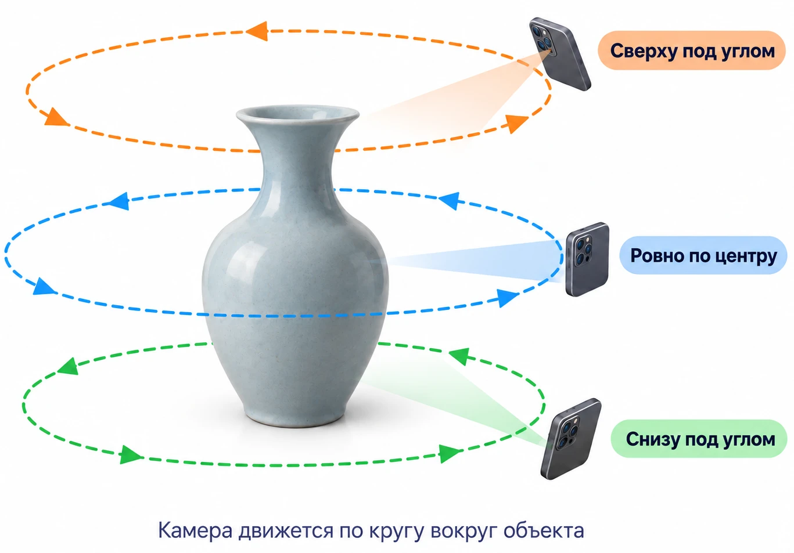

3DModGenerator
Бесплатная программа для создания фотореалистичных 3D-моделей из обычных видео и фотографий с помощью технологии Gaussian Splatting.
СкачатьО программе
3DModGenerator позволяет создать 3D-модель объекта из видео или набора фотографий. Добавьте материалы в программу, запустите обработку и получите готовую 3D-модель.

Обработка выполняется локально на компьютере. Установка программы не требуется: скачайте ZIP-архив, распакуйте его и запустите приложение.
Системные требования: Windows 10/11, видеокарта NVIDIA GeForce RTX 20-й серии или новее.
Возможности
- создание 3D-моделей из видео и фотографий;
- автоматическая обработка исходных материалов;
- просмотр и редактирование готовой модели;
- обрезка, перемещение и вращение модели;
- экспорт готовой 3D-модели.
Как начать
Скачайте архив, распакуйте его в любую папку и запустите Start-3DModGenerator.exe.